Task 1: Let’s start with the lab!
Step 1: Login Into Intersight
Below are the details for each pod. On the piece of paper you will see your pod number. You can use those details to login and shows you which server is assigned to you.
Table 1
| Pod | Username | Password | Server | User Label |
|---|---|---|---|---|
| 1 | ucsx01@intersighttme.com | UCSX@Cisco123 | RTP91-FI6454-01-1-1 | SVR-01 |
| 2 | ucsx02@intersighttme.com | UCSX@Cisco123 | RTP91-FI6454-01-1-2 | SVR-02 |
| 3 | ucsx03@intersighttme.com | UCSX@Cisco123 | RTP91-FI6454-01-1-3 | SVR-03 |
| 4 | ucsx04@intersighttme.com | UCSX@Cisco123 | RTP91-FI6454-01-1-4 | SVR-04 |
| 5 | ucsx05@intersighttme.com | UCSX@Cisco123 | RTP91-FI6454-01-1-5 | SVR-05 |
| 6 | ucsx06@intersighttme.com | UCSX@Cisco123 | RTP91-FI6454-01-1-6 | SVR-06 |
| 7 | ucsx07@intersighttme.com | UCSX@Cisco123 | RTP91-FI6454-01-1-7 | SVR-07 |
| 8 | ucsx08@intersighttme.com | UCSX@Cisco123 | RTP91-FI6454-01-1-8 | SVR-08 |
| 9 | ucsx09@intersighttme.com | UCSX@Cisco123 | RTP91-FI6454-02-1-1 | SVR-09 |
| 10 | ucsx10@intersighttme.com | UCSX@Cisco123 | RTP91-FI6454-02-1-2 | SVR-10 |
| 11 | ucsx11@intersighttme.com | UCSX@Cisco123 | RTP91-FI6454-02-1-3 | SVR-11 |
| 12 | ucsx12@intersighttme.com | UCSX@Cisco123 | RTP91-FI6454-02-1-4 | SVR-12 |
| 13 | ucsx13@intersighttme.com | UCSX@Cisco123 | RTP91-FI6454-02-1-5 | SVR-13 |
| 14 | ucsx14@intersighttme.com | UCSX@Cisco123 | RTP91-FI6454-02-1-6 | SVR-14 |
| 15 | ucsx15@intersighttme.com | UCSX@Cisco123 | RTP91-FI6454-02-1-7 | SVR-15 |
| 16 | ucsx16@intersighttme.com | UCSX@Cisco123 | RTP91-FI6454-02-1-8 | SVR-16 |
| 17 | ucsx17@intersighttme.com | UCSX@Cisco123 | RTP91-FI6454-03-1-1 | SVR-17 |
| 18 | ucsx18@intersighttme.com | UCSX@Cisco123 | RTP91-FI6454-03-1-2 | SVR-18 |
| 19 | ucsx19@intersighttme.com | UCSX@Cisco123 | RTP91-FI6454-03-1-3 | SVR-19 |
| 20 | ucsx20@intersighttme.com | UCSX@Cisco123 | RTP91-FI6454-03-1-4 | SVR-20 |
| 21 | ucsx21@intersighttme.com | UCSX@Cisco123 | RTP91-FI6454-03-1-5 | SVR-21 |
| 22 | ucsx22@intersighttme.com | UCSX@Cisco123 | RTP91-FI6454-03-1-6 | SVR-22 |
| 23 | ucsx23@intersighttme.com | UCSX@Cisco123 | RTP91-FI6454-03-1-7 | SVR-23 |
| 24 | ucsx24@intersighttme.com | UCSX@Cisco123 | RTP91-FI6454-03-1-8 | SVR-24 |
| 25 | ucsx25@intersighttme.com | UCSX@Cisco123 | RTP91-FI6454-04-1-1 | SVR-25 |
| 26 | ucsx26@intersighttme.com | UCSX@Cisco123 | RTP91-FI6454-04-1-2 | SVR-26 |
| 27 | ucsx27@intersighttme.com | UCSX@Cisco123 | RTP91-FI6454-04-1-3 | SVR-27 |
| 28 | ucsx28@intersighttme.com | UCSX@Cisco123 | RTP91-FI6454-04-1-4 | SVR-28 |
| 29 | ucsx29@intersighttme.com | UCSX@Cisco123 | RTP91-FI6454-04-1-5 | SVR-29 |
| 30 | ucsx30@intersighttme.com | UCSX@Cisco123 | RTP91-FI6454-04-1-6 | SVR-30 |
| 31 | ucsx31@intersighttme.com | UCSX@Cisco123 | RTP91-FI6454-04-1-7 | SVR-31 |
| 32 | ucsx32@intersighttme.com | UCSX@Cisco123 | RTP91-FI6454-04-1-8 | SVR-32 |
- With the browser, goto: https://intersight.com
- You will see the following screen (figure 2):
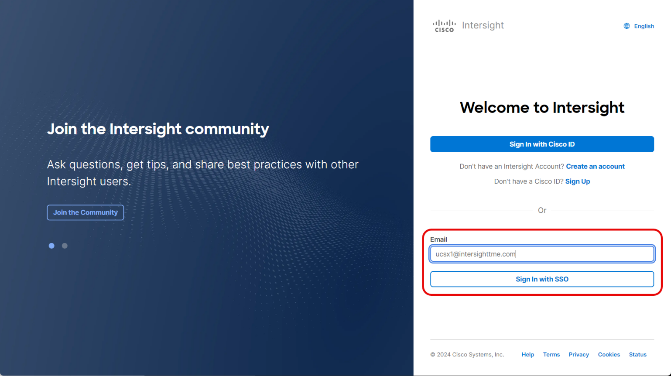
Figure 2
- Use the email address given to you, see Table 1, to sign in with SSO.
- It is possible that you see the following message:
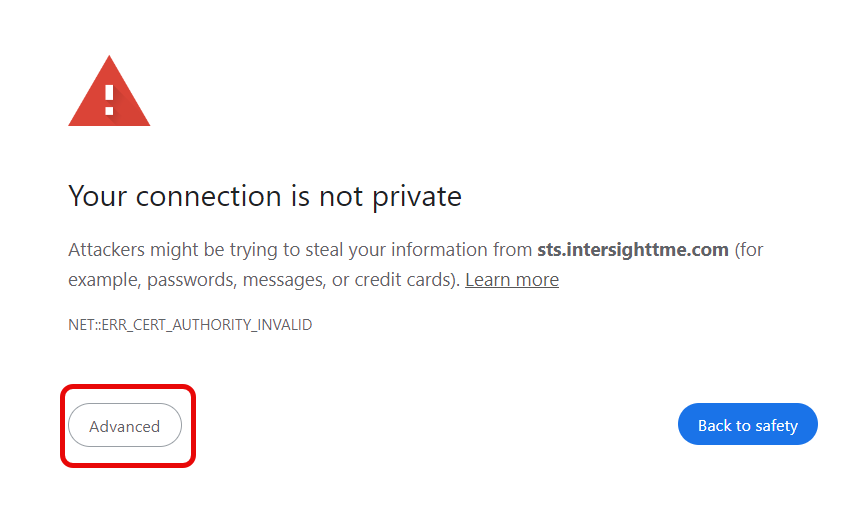
Figure 3
- Just click on Advanced and Proceed to sts.intersighttme.com.
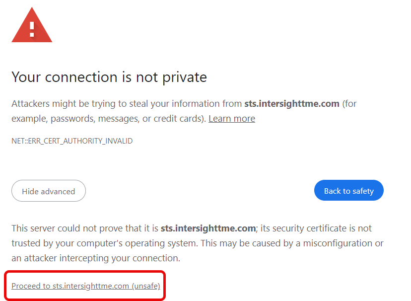
Figure 4
- Here you can fill in the password, given to you in table 1.
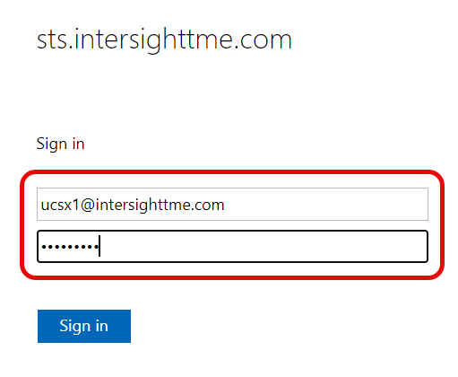
Figure 5
- If you see this error message, please try to login again:

Figure 6
- If you successfully log in, you should see a screen similar to the image below:
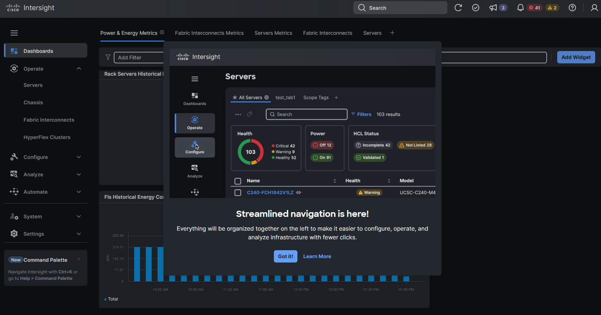
Figure 7
- If you don’t see the Dashboards page, click on Dashboards from the left navigation pane:
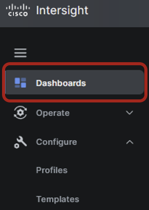
Figure 8
Resource Groups Overview
The slide below shows that Resource group is a way to do Roll Based Access:

Figure 9
In this lab, we are sharing devices, like Fabric Interconnects and servers, with another Lab Workshop. When creating new policies in this lab, you will see the organizations X-Series-Configuration and UCSX-Lab-Resources in the dropdown box similar to the image below:

Figure 90
The UCSX-Lab-Resources organization is read-only. You can use those configurations if you want and if directed to do so.
Here is an example where the UCSX-Power policy is in the Organization UCSX-LAB-RESOURCES

Figure 11
Tags, Filters and User Labels
During this lab, we will be creating policies. When creating policies, you can work with Tags. This can make life easier to search for specific parameters. For the following upcoming tasks, please use your pod number.
To set up a Tag in a policy, enter a name and colon in the Set Tags Field (i.e. Example: POD:1) and then hit enter. You will see POD 1 in grey (Figure 13)

Figure 10

Figure 11
- There are filters, and there are different ways to use them. You can start typing a text and hit enter. Now, you will see the policies with that search text in them.
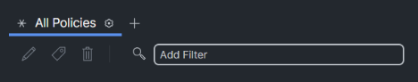
Figure 12

Figure 13

Figure 14
In the lab, you will also be able to search on the TAGS. Just enter the tag name, and you will see a selection.
Later in the lab after you have created profiles, you can enter the tag key followed by : and then choose the TAG numbers similar to the image below:
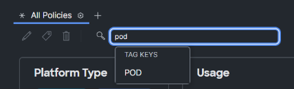
Figure 15
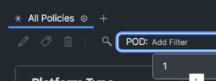
Figure 16
Now you will see only the results with the tag POD:1

Figure 17
- User Labels
- Intersight can manage thousands of servers and have users assigned to servers to make life easier for a systems administrator by implementing User Labels.
- This can be accomplished from the Servers section under Intersight.
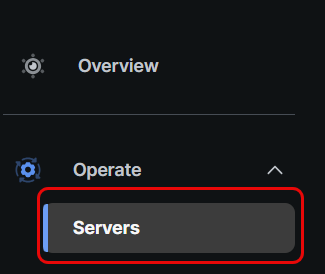
Figure 18
- Locate the server assigned to you from the lab guide and click on the three dots next to your assign server. Next, select System and then select Set User Label as shown in the image below:
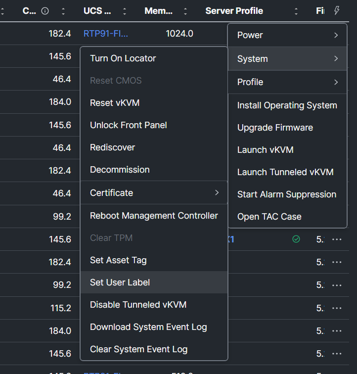
Figure 19
- At this moment, you may not see the user labels at the server overview. To enable the column, click Settings next to the All Servers tab and select edit as shown in the image below:
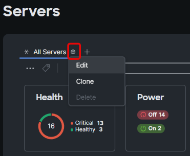
Figure 20
- Now, scroll down and select User Label then select Save:

Figure 21
- Now you will see the User Label and you can filter on it or move it to the first column:
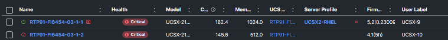
Figure 22